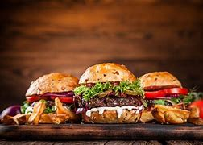
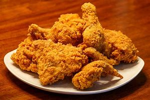
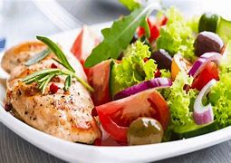

Food Expansions
class "burgers"

class "Fried Chicken"

class "Salad Meal"

Unhealthy Food Habits
How to eat Healthy?
Here are some tips on how to create healthy eating habits:
Plan your meals and snacks ahead of time so you decide what you eat based on nutrition, not based on what is left in your pantry. Planning ahead also helps you keep to a budget and makes shopping easier.
Choose wholefood options such as wholemeal and wholegrain carbohydrates like pasta, bread and flour.
Choose fresh fruit for dessert instead of junk food to keep away from added salt, sugar and saturated fat.
Check your food's nutritional value using the nutritional information panel on the back of the packet.
Watch out for advertising 'tricks', including claims that a product has 'no added sugar', since it can still be high in kilojoules, salt or fat. A product can claim to be 'reduced in fat' as long as it has less fat than an earlier version of the product — but it may still be high in fat.
Use the Health Star Rating system to compare similar packaged items and choose the healthiest one.
Why do we love unhealthy foods?
Well,You just cant seem to give it up and keep eating, especially during times of heavy stress. And there is certainly been plenty of stress to keep us hitting the bags of
chocolate the last several months. Especially when we are stressed, junk food often soothes us with the least amount of fuss and effort. We look for sugary and fatty foods to make us feel good,”
says registered dietitian Beth Czerwony, RD. There are ways to get control of your food cravings, instead of them controlling you. Junk food is food that is unhealthy for you, just as the word “junk” implies.
Unhealthy food habits
According to a 2012 Food and Health Survey, only 3 in 10 Americans believe that all sources of calories play an equal role in weight gain. Many Americans believe that carbohydrates, sugars, and fats are the key
sources for weight gain. Americans consume 31% more packaged food than fresh food. Healthiness of the food we eat decreases by 1.7% for every hour that passes in the day, meaning that people generally eat healthiest
at breakfast and will most likely eat unhealthier food later in the day.Over 10 billion donuts are consumed in the US every year. Americans spend 10% of their disposable income on fast food every year.
Expansions
How to make heathly food choices
It's important to understand the nutritional value of the food you are buying. You can do this by reading the nutrition panel found on the back of all packaged items. Food labels can tell you things like the amount of
energy, protein, fat, carbohydrates, sugars, fibre and sodium (salt) in each product, as well as the recommended serving size.When checking a product for its nutritional value, make sure you look at the health claims such as 'low in fat' or 'sugar free', as these can be misleading.
When a product is advertised as 'light' or 'lite', this may refer only to the product's colour or flavour. This means that the product may still be 'full-fat' — be sure to read the nutrition information panel at the back of the package for the actual fat content.
About